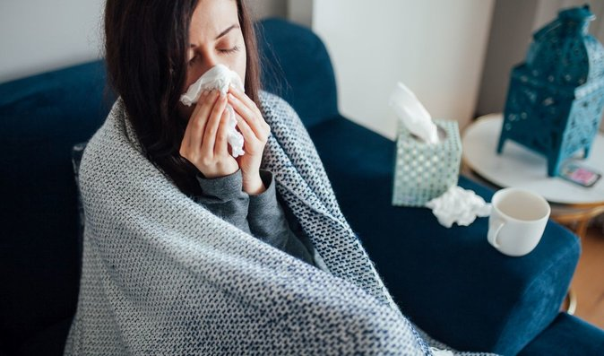
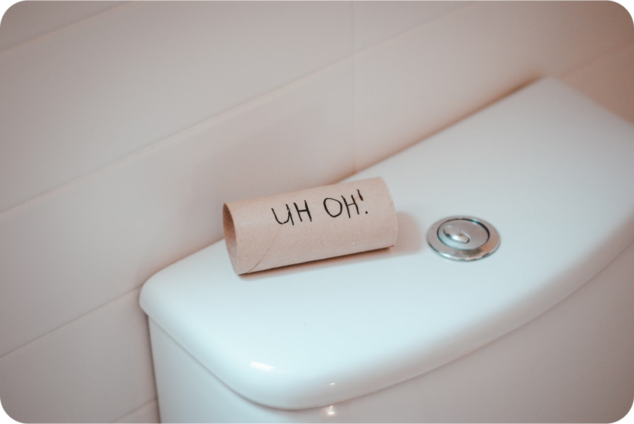
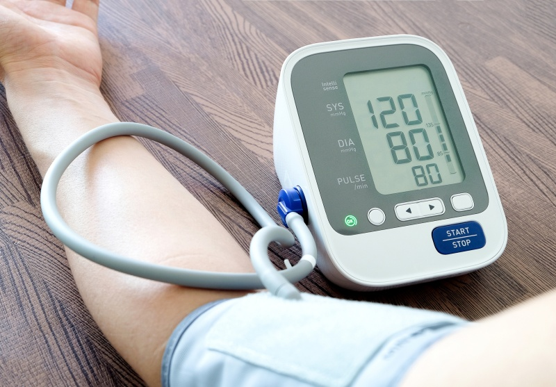
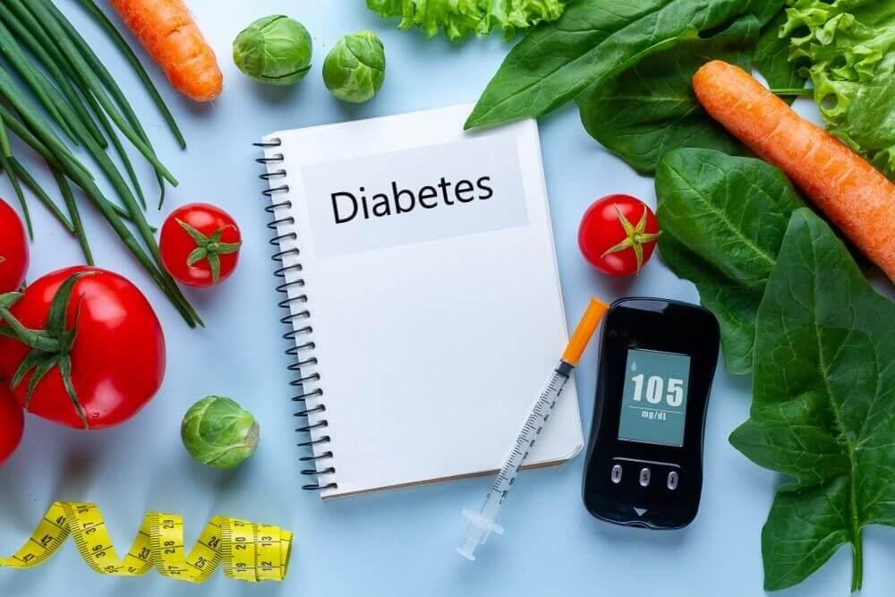
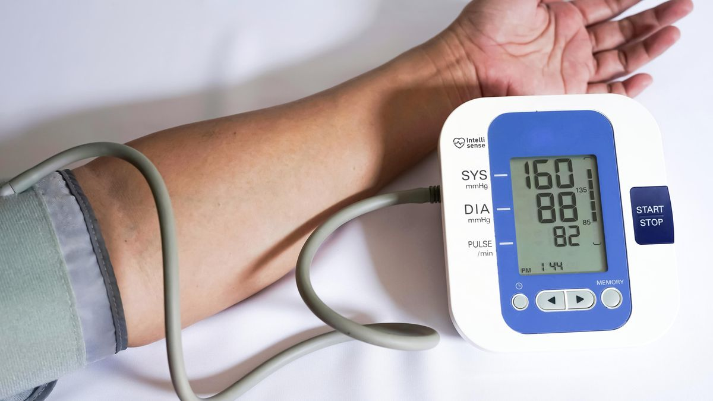
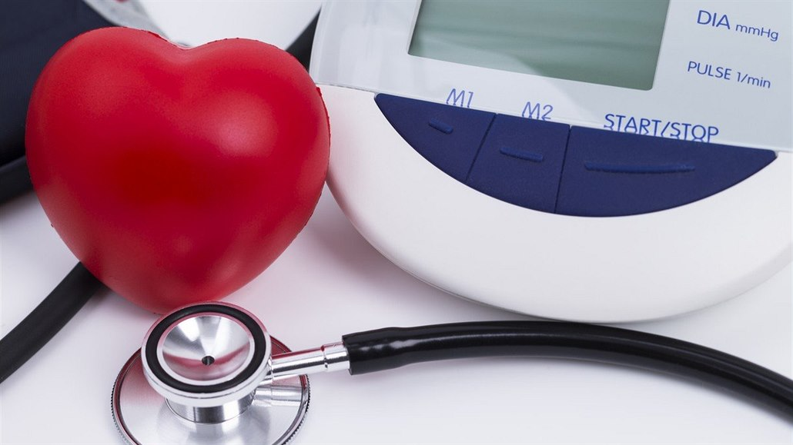
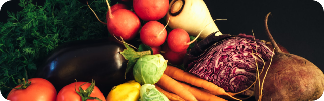

Informace pro naše pacienty
Domácí péče a obecné preventivní a léčebné doporučení
Odkazy na domácí péči v regionu
Domácí péče je určena pacientům vyžadujícím následnou péči po propuštění z nemocnice nebo těm, kteří potřebují pravidelnou pomoc kvůli svému zdravotnímu stavu v domácím prostředí. Je určena pacientům s určitým stupněm bezmocnosti, kteří nemohou samostatně nebo pouze s dopomocí rodiny pobývat doma.
Domácí péče poskytuje kvalifikované péči, jako např. jsou převazy chronických ran, péče o střevní vývody, výměny katetrů a další. Domácí péče je plně hrazena, pokud je indikována lékařem. Můžete také zažádat o státní příspěvek na domácí péči.
Podmínky a žádost naleznete na stránkách Ministerstva práce a sociálních věcí:


Desatero doporučení pro kvalitní spánek (spánková hygiena)
- Spěte v příjemném prostředí
- Před spaním si dopřejte dostatek času na zklidnění
- Lůžko je určeno pro spánek a intimní život
- Pravidlo 15 minut (pokud neusnete do 15 minut, věnujte se přechodně jiné činnosti, nejlépe četbě)
- Určete si pravidelný čas vstávání
- Buďte během dne aktivní, a to jak fyzicky, tak duševně
- Dávejte pozor na to, co svému tělu dáváte před spánek (zejména tekutiny, lehké drogy)
- Vystavujte se co nejvíce přirozenému světu, hlavně brzy ráno
- Obrazovky a elektronická zařízení (mobily) spánku škodí
- Plánujte chytře svá zdřímnutí během dne
Doporučení pro domácí léčbu nachlazení
- Vyvarujte se zvýšené fyzické činnosti, dostatečně odpočívejte a spěte
- Pijte dostatečné množství tekutiny (min 30ml/kg/den) a množství upravte v závislosti na pocení
- Nezapomínejte na očkování a to nejenom ve stáří (očkování proti chřipce, COVIDU, RS viru, pneumokoku, černému kašli). Výrazné je doporučení pro očkování během těhotenství!
- Horečku tlumte až pokud vystoupí nad 38 stupňů. Horečku snižujeme zábaly anebo volně dostupnými léky z lékárny. Ideálním lékem je Paracetamol v maximální dávce 4000mg/den anebo u současných bolestech Ibuprofen v maximální dávce 1200mg/den.
- Při rýmě užívejte volně dostupné nosní spreje z lékárny po domluvě s lékárníkem. Vhodné jsou spreje a konvičky se solnými roztoky k proplachům nosu (Rhino horn). K uvolnění nosu jsou vhodné také prsní balzámy např. thymiánová mast nebo krém.
- Při kašli sledujte charakter Vašeho kašle. V počátcích nemoci a také přes den se hodí sirupy na vlhký kašel, které podporují vykašlávání (Mucosolvan, Ambrobene, ACC long šumivé tablety). Při suchém kašli nebo na noc jsou ideální prostředky, které kašel tlumí (Stop).
- Při bolestech v krku kloktejte solnými roztoky, v lékárně zakupte Vincentku anebo pastilky doporučené lékárníkem. V případě angíny jsou vhodné Priessnitzové krční zábaly. Kousek látky nebo kapesníku namočte do vlažné vody a přiložte na krk. Mokrou látku překryjte igelitovým sáčkem a poté suchým ročníkem.
- Přechodně zvyšte příjem vitamínu C (1000mg/den) a Zinku (75mg) hned na začátku nemoci

Doporučení při průjmovitém onemocnění
- Dostatečný přísun tekutin, vhodný je černý čaj, nesycené minerální vody, případně rehydratační roztoky (buď z lékárny či roztok připravený z 1l vody, 8 lžiček cukru, 1 lžičky soli a 1 šálku neslazeného ovocného čaje či dvou pomerančů), při zvracení jsou vhodné chladné tekutiny podávané v malých dávkách
- Nevhodné jsou ovocné a zeleninové šťávy, džusy, perlivé nápoje, káva, alkohol či Coca-Cola.
- Vhodné jsou rýžové polévky, bramborová a rýžová kaše, starší pečivo, dietní suchar
- Z ovoce jsou vhodné banány, strouhaná jablka bez slupek
- Po zmírnění obtíží je vhodné přecházet pomalu na normální stravu a vyloučit zejména tučná, přepalovaná jídla, nadýmavá ovoce a zeleniny, silně kořeněná jídla a alkohol.

Domácí měření krevního tlaku (cíl hodnot pod 135/90)
- Pořiďte si tlakoměr s manžetou na paži (doporučujeme tlakoměr Omron easy)
- Pořiďte si notýsek, do kterého budeme naměřené hodnoty zapisovat
- Tlak se u stabilní nemoci měřte pravidelně co 14 dní, po změně léčby 2x denně 7 dní, tlak měříte ráno před léky a za 12 hodin po lécích
- Tlak měřte v sedě bez překřížených nohou na stejné paži s otevřenou dlaní v pohodlném opřeném sedu
- Tlak měřte 3x za sebou po 5 minutách, první měření nepočítejte, z dalších dvou měření vypočítejte průměr
- Zapsané hodnoty doneste k pravidelné kontrole k lékaři (tlak měříme také u diabetiků, prediabetiků)

Doporučení k zabránění vzniku prediabetu a cukrovky
- Pravidelně aerobně cvičte (chůze, rychlá chůze – nordic walking, rotoped, běh) minimálně 3x týdně 30-40 minut, ideálně denně. Význam má i svalové cvičení. Dosáhnout byste měli 70% své maximální tepové frekvence srdce, která se vypočítá ze vzorce 220-věk. Aktivity postupně časově stupňujte, abyste se vyvarovali přetížení.
- Omezte příjem energie a snižte svou váhu alespoň o 5%, pokud máte nadváhu či obezitu (BMI vyšší jak 25 kg/m²), a následně tuto váhu udržte. Ideální je snížení váhy o 10%.
- Snižte příjem druhotně zpracovaného masa (uzeniny, fastfood, paštiky, apod.).
- Snižte příjem živočišného tuku (vepřové maso, sádlo, máslo, tučné sýry) a přepalovaného tuku (smažené potraviny).
- Zvyšte příjem polynasycených omega 3 mastných kyselin (rostlinné oleje a ryby).
- Zvyšte příjem kávy a ořechů.
- Zvyšte příjem listové zeleniny, ovoce a vlákniny.
- Mějte dobře kontrolovaný tlak krve a dobré hodnoty cholesterolu.
- Další informace na stránkách Diab.cz
- Sestavte si jídelníček na stránkách STOB.cz

Doporučení při náhlém zvýšení krevního tlaku
- Pokud máte kolísavý tlak, můžete být vybaveni lékem Tensiomin 25mg. Lék účinkuje rychle a nepoužíváme se pravidelně.
- Při výrazném zvýšení krevního tlaku (horní systolický přes 170 či spodní 105) rozkousejte tabletku léku a nechte jej vstřebat v ústech, za 30 minut tlak zkontrolujte, pokud nedojde ke zlepšení, tak postup ještě jednou opakujte.
- Pokud se tlak nesníží po podání dvou tablet Tensiominu, tak nás konzultujte v nejbližší době nebo vyhledejte lékaře v nejbližším zdravotnickém zařízení.

Režim hypertonika (nemocného léčeného na vysoký tlak)
- Omezte solení a příjem soli nad 5g/den
- Pijte kohoutkovou vodu a čaje, z minerálních vod je vhodná Magnézia (nejmenší obsah soli)
- Omezte spotřebu alkoholu na minimum, nepřekračujte hranici 1 piva denně nebo 0,2 l vína
- Jezte vyváženou stravu s dostatkem ovoce a zeleniny (nejlépe 4ks denně), vhodné jsou také luštěniny a nízkotučné mléčné výrobky, ryby, ořechy a oleje obsahující nenasycené mastné kyseliny. Vhodnou inspirací je středomořská dieta, která nejen vede k poklesu krevního tlaku, ale i celkového rizika infarktu. Káva sice akutně zvyšuje krevní tlak, avšak z dlouhodobého hlediska má protektivní vliv.
- Pravidelně sportujte nejlépe dynamickou fyzickou aktivitou 5-7x za týden, jedná se například o běhání, chůzi, cyklistiku. Také lze doporučit posilování 2-3x týdně
- Spěte dostatečně a dodržujte pravidla spánkové hygieny

Doporučení k prevenci osteoporózy
- Jezte dostatek zeleniny, ovoce a vlákniny - každý den alespoň čtyři porce zeleniny a tři porce ovoce. Světová zdravotnická organizace (WHO) doporučuje sníst denně až 400 g ovoce a zeleniny v poměru 2:1 ve prospěch zeleniny.
- Vybírejte si zdravé zdroje bílkovin a tuků - preferujte rostlinné bílkoviny, jako jsou fazole a ořechy, stejně jako ryby, drůbež bez kůže a libové kousky masa.
- Pravidelně se hýbejte - cvičení napomáhá udržovat správnou rovnováhu v tvorbě a úbytku kostní hmoty. V mládí navyšuje množství kostní hmoty, v dospělosti zpomaluje její ztrát (např. nordic walking, plavání a další podobné sporty ve „vzpřímené“ poloze).
- Omezte příjem cukru a soli ve stravě.
- Omezte konzumaci alkoholu a kofeinu - konzumace alkoholu urychluje úbytek kostní hmoty a snižuje schopnost těla vstřebávat vápník, kofein může mírně zvýšit ztrátu vápníku močí. Konzumace až tří šálků kávy denně je s ohledem na ztráty vápníku močí zcela v pořádku.
- Vápník (kalcium) – dospělí do 50 let: 800-1000 mg/den, dospělí nad 50 let: 1200-1500 mg/den, těhotné a kojící ženy: 1200 mg/den (vejce, sýr, tvaroh, jogurt, čočka, kapusta, mandle). Kvůli lepší vstřebatelnosti by jednotlivá dávka podaná v lékové formě neměla přesáhnout 500 mg, je lepší ji podávat navečer.
- Vitamin D - Vitamin D je důležitý pro vstřebání vápníku z potravy, příp. léčivých přípravků nebo doplňků stravy. Dále je velmi důležitý pro svaly a svalovou koordinaci, čímž snižuje riziko pádů a zlomenin kostí. Vitamin D se tvoří v kůži po vystavení pokožky slunci (ultrafialovému záření). K zajištění dostatku vitaminu D stačí na 10-15 minut denně vystavit svůj obličej a paže slunečním paprskům. Lidé nad 60 let a lidé se zvýšeným rizikem osteoporózy by měli, zvláště v zimním období, užívat přípravky s obsahem vitamínu D. Doporučený denní přívod vitamínu D je 400 IU do 50 let věku a 800 IU nad 50 let věku.
